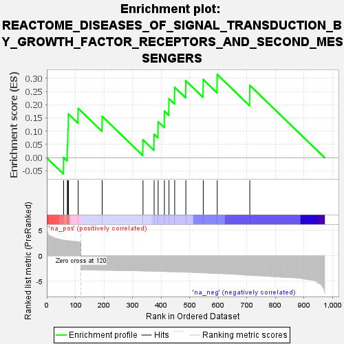
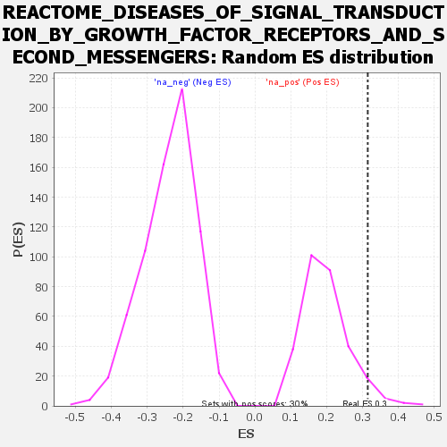

| | | Dataset | genes_ranked_stat_0.1 |
| Phenotype | NoPhenotypeAvailable |
| Upregulated in class | na_pos |
| GeneSet | REACTOME_DISEASES_OF_SIGNAL_TRANSDUCTION_BY_GROWTH_FACTOR_RECEPTORS_AND_SECOND_MESSENGERS |
| Enrichment Score (ES) | 0.31454796 |
| Normalized Enrichment Score (NES) | 1.5896721 |
| Nominal p-value | 0.05050505 |
| FDR q-value | 0.27112776 |
| FWER p-Value | 0.226 |
Table: GSEA Results Summary

Fig 1: Enrichment plot: REACTOME_DISEASES_OF_SIGNAL_TRANSDUCTION_BY_GROWTH_FACTOR_RECEPTORS_AND_SECOND_MESSENGERS
Profile of the Running ES Score & Positions of GeneSet Members on the Rank Ordered List
| SYMBOL | RANK IN GENE LIST | RANK METRIC SCORE | RUNNING ES | CORE ENRICHMENT | | 1 | PSMA5 | 59 | 3.073 | 0.0005 | Yes |
| 2 | PDGFRA | 72 | 2.971 | 0.0479 | Yes |
| 3 | FGF1 | 74 | 2.951 | 0.1065 | Yes |
| 4 | KAT2B | 76 | 2.941 | 0.1648 | Yes |
| 5 | CNTRL | 110 | 2.766 | 0.1862 | Yes |
| 6 | PDGFB | 194 | -2.807 | 0.1563 | Yes |
| 7 | FN1 | 337 | -2.947 | 0.0675 | Yes |
| 8 | CEBPB | 376 | -2.996 | 0.0884 | Yes |
| 9 | FGF18 | 390 | -3.022 | 0.1358 | Yes |
| 10 | HDAC10 | 412 | -3.067 | 0.1758 | Yes |
| 11 | DHH | 428 | -3.098 | 0.2227 | Yes |
| 12 | JAG2 | 448 | -3.128 | 0.2660 | Yes |
| 13 | EREG | 487 | -3.193 | 0.2909 | Yes |
| 14 | DKK1 | 548 | -3.323 | 0.2953 | Yes |
| 15 | STAT5A | 597 | -3.433 | 0.3145 | Yes |
| 16 | ARRB1 | 711 | -3.808 | 0.2735 | No |
Table: GSEA details [plain text format]

Fig 2: REACTOME_DISEASES_OF_SIGNAL_TRANSDUCTION_BY_GROWTH_FACTOR_RECEPTORS_AND_SECOND_MESSENGERS: Random ES distribution
Gene set null distribution of ES for REACTOME_DISEASES_OF_SIGNAL_TRANSDUCTION_BY_GROWTH_FACTOR_RECEPTORS_AND_SECOND_MESSENGERS